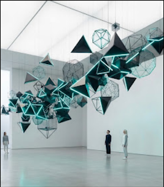

Est. 2020
2+
Nonprofit Platforms Built
We design and build modern websites for nonprofits, helping organizations strengthen their online presence, share their mission, and connect with the communities they serve.

Nonprofit Platforms Built
Lives Impacted Indirectly
Lines of Donated Code
The team behind Mission Driven
Hi, my name is Ryan Cha. I'm a high school student with a passion in coding and design. With these skills I am hoping to support non-profit organizations make a difference in their communities by strengthening their online presence and helping them reach more people.
Marcus engineers the structural integrity of every project. Specializing in high-availability, low-bandwidth solutions, he ensures that technology deployed in remote or resource-constrained environments operates reliably when it matters most.